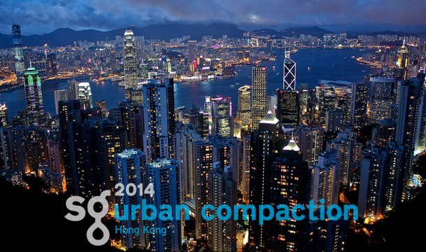
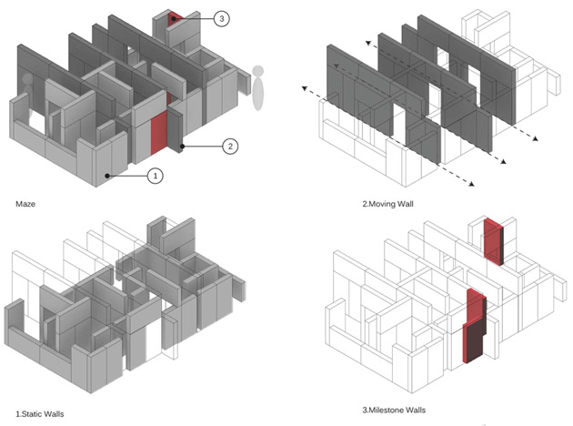
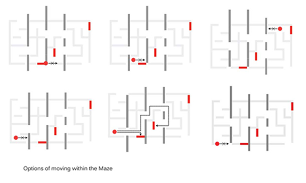
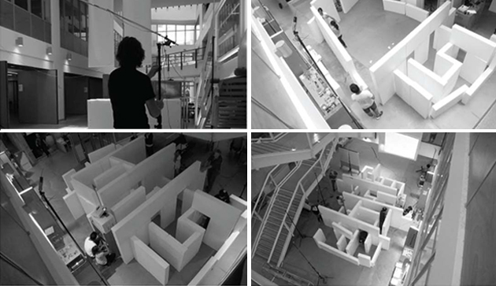
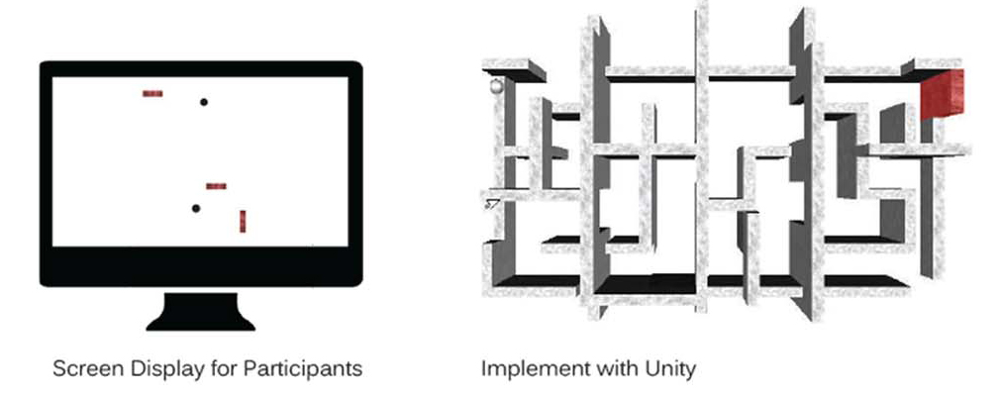
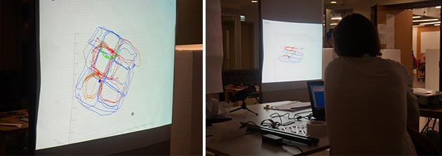
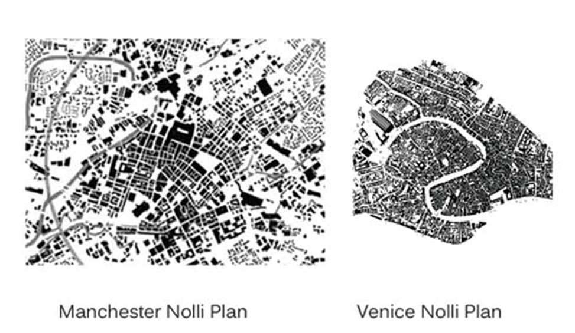
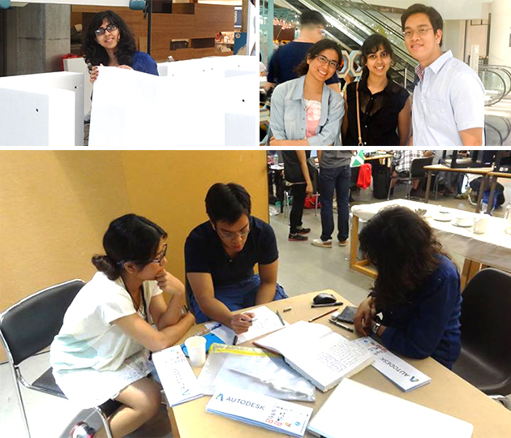

spaces in experience
Overview
Project done on developing the concept of an adaptive maze and studying the implications of responsive and adaptive spaces
Description
Spaces in Experience explored human experience in relation to adaptive environments through experiential sketching: a combination of actor training, people tracking, physical modelling and augmented reality.
To test and study this I came up with the idea of making a 1:1 prototype of an adaptive maze and fuse it with augmented reality to make a game where participants move around the adaptive maze and are supposed to accomplish goals using corrdination and cognition skills. This lay an interesting foundation for studying how peope experience space that is responsive and in motion.
Collaborators
Haruna Okawa, Paul Tsang, Serdar Aiyden
SmartGeometry, The Chinese University of Hong Kong, 2014
Urban compaction requires us to rethink how we use and conceive space. The need to build higher and at increased complexity challenges how we design inhabitable spaces. The challenge provides an interesting opportunity to think about environments that are adaptive; Space that in real time negotiates dynamic relations with the occupants that it accommodates. This cluster will explore and develop the experience of spaces that can be manipulated in real-time and 1:1 scale.
With population growth and density, the way we perceive space changes. Because of this, architecture as a mechanism that operates with space, needs to be reconsidered. The potential of adaptive architecture comes into play with the limited spaces available.
A game in the form of a maze is created to stimulate this phenomena and study human behavior. The game involves two participants competing to find 3 milestone walls. The catch lies in finding the milestone walls in a particular order while moving walls allow or block the participant's movement. The participants are tracked by the games on track system which is displayed to them throughout the game. This way, they are aware of their location in relation to the milestone wall and their opponent. Participants are notified through Skype when they have located the milestone wall.
We thought of various configurations and possibilities for the adaptive maze and how a participant of the game would navigate through the opening and closing passages.
Development and working of the maze
The participant can only see the milestone walls using augmented reality. The game can also be played in a team where one team member navigates the maze and can see his/her position through tracking devices while the other can see the milestone walls on their screens and helps naviagte his/her partner inside the maze.
After interviewing the participants, their feedback touched upon different notions of spatial experience. Participant 1 emphasized his eagerness to find more open spaces, minimizing his visual barriers in order to locate himself within the maze.
Participant 2 perceived more space than there actually was because of its adaptive quality. He made specific reference to how Venice felt larger to Manchester despite Manchester being 3 times larger, because of its fractal nature. The maze performed like Venice in this sense. Participant 3 stressed that she could not recollect the spaces she had already been through.
From this investigation, we discovered that adaptive architecture has the potential of freeing up spaces within a closed system. However the identity of space maybe lost. The question now becomes how we use the new tools.